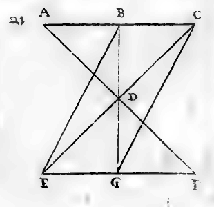

Proposition XIX: Second Pyramid Ratio of Element IV¶


Proposition XIX · Theorem IX
With the same figure of the Fourth Element set forth, let us draw moreover two lines EB, GC. I say that GF is to FE as the pyramid whose base is triangle CDG and altitude AB is to the pyramid whose base is triangle BDE and altitude AC.
(Tab. 2, Fig. 21) The ratio GF to FE, namely that of weight E to G, is compounded of the ratios of the heavy bodies E to C to B to G, namely of the straight lines CD to DE, AB to AC, and GD to DB, or of the same taken perturbedly, namely from the ratios CD to DE, GD to DB, AB to AC, that is, from triangle CDG to triangle EDB, and from the straight line AB to AC; but from these ratios is compounded the ratio of the pyramid whose base is triangle CDG and altitude AB to the pyramid whose base is triangle EDB and altitude AC; therefore as the former to the latter pyramid, so GF to FE, which &c.